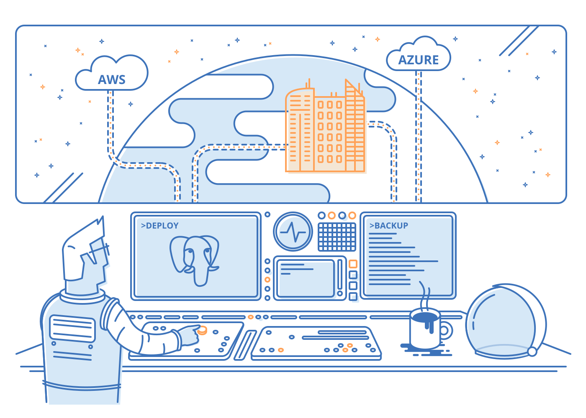
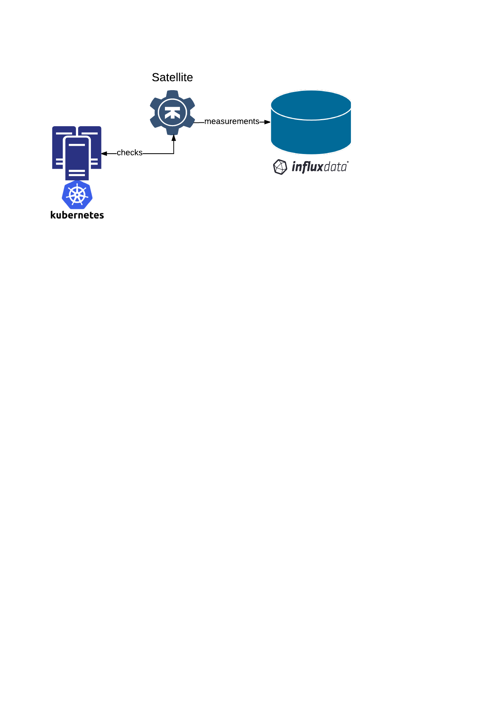

Monitoring Kubernetes with InfluxData
Created by Sasha Klizhenas / @klizhentas
About me
Founding engineer, Mailgun (YC W11) by Rackspace
CTO & co-founder, Gravitational (YC W15)
Voice, messaging, systems engineering since 2006
Focusing on infrastructure
About Gravitational
Deploy and manage complex applications across distributed infrastructure
About Telekube: Overivew
Multi-Region Kubernetes for Deploying and Managing Distributed Applications
This Webinar: Overview
→ Choosing Time Series Platform
Monitoring Kubernetes with TICK
Monitoring Applications with TICK
Choosing Time Series Platform: Prometheus

Performant: 800K writes/second per node
First Class Kubernetes Integration
Low Operational footprint (Go, low memory usage)
Choosing Time Series Platform: Prometheus
“Prometheus is not intended as durable long term storage, it's fundamentally limited to the size of a machine. You should also design your monitoring be able to tolerate completely losing the data of a Prometheus.“
Brian Brazil, Prometheus Core Developer
Choosing Time Series Platform: OpenTSDB

Performant: 300K metrics/second, scales linearly
Proven Backends: Cassandra, HBASE
Choosing Time Series Platform: OpenTSDB
Operational Footprint: HBase, Zookeeper, Java
Choosing Time Series Platform: InfluxData

Performant: 200K writes/second
Low Operational footprint (Go, low memory usage)
Retention Policies and Rollups
Upgrade story: Enterprise, Managed Versions with Clustering
High Availability
Choosing Time Series Platform: InfluxData
Weaker Kubernetes Integration: Kapacitor, Telegraf should be better
Kapacitor is hard
No OSS HA
Choosing Time Series Platform: InfluxData
HA, Commercial support and Data retention matters
This Webinar: Overview
Choosing Time Series Platform
→ Monitoring Kubernetes with TICK
Monitoring Applications with TICK
Monitoring Kubernetes with TICK

Monitoring Kubernetes with TICK
Break the cluster!
This Webinar: Overview
Choosing Time Series Platform
Monitoring Kubernetes with TICK
→ Monitoring Applications with TICK
Monitoring Applications with TICK
Deploy Evil App!